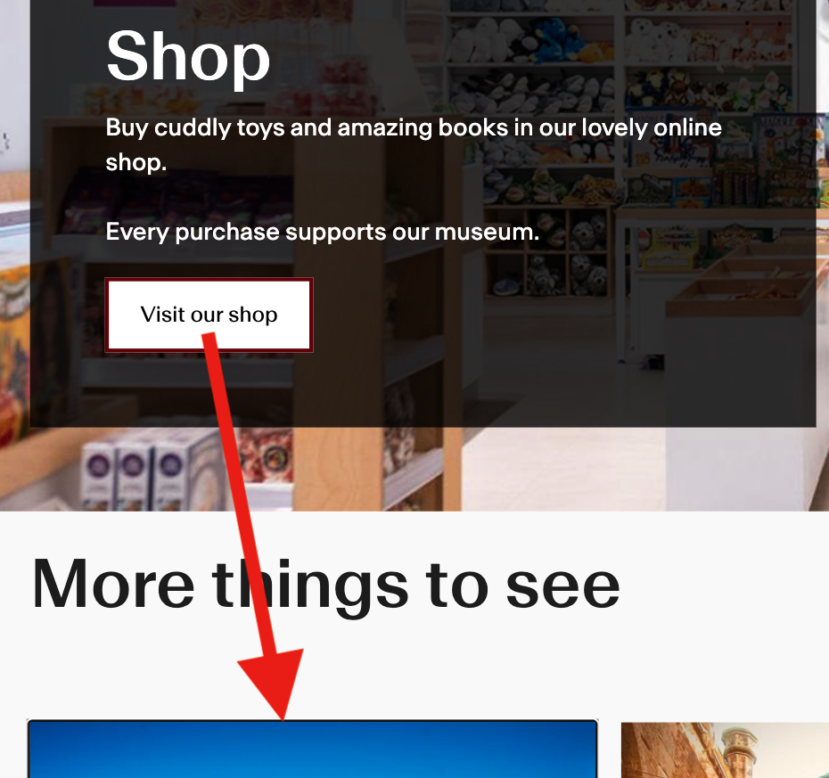

3.2.1 On Focus (A)
Focusing on page elements must not cause anything unexpected to happen.
What WCAG says:
When any user interface component receives focus, it does not initiate a change of context.
Check the official guidance for Understanding 3.2.1 On Focus
What this means
When navigating a webpage, there are different ways to focus on an interactive element (such as a menu, radio button or text field), for example:
- moving to it using the Tab key
- clicking or tapping it
- navigating to it using a screen reader or speech recognition software
When a user focuses on something, nothing unexpected must happen - for example, keyboard focus must not move to a different part of the page.
Why it matters
Users must be able to navigate webpages in a way they’ll expect. Unexpected changes can be particularly disorienting to people with visual, cognitive or motor impairments.
How to check
Navigate through interactive elements using the Tab key and check that there is no unexpected behaviour such as:
- focus moving elsewhere
- a new page or window loading
- a form getting submitted
Similarly, click or tap any form fields which you would not expect to move the user elsewhere.
How to test in detail for 3.2.1 On Focus
Common mistakes
Focus jumps unexpectedly
One example comes from a museum website, where focusing on the “visit our shop” button causes the page to scroll down. This makes the focus unexpectedly move again to the first item in the next section, “More things to see”.

By default, when creating a webpage, focus stays on an interactive element until the user changes it. However, some website creators may change the default behaviours.
In this example, there is extra JavaScript code which responds to the page scrolling, and automatically advances the page to the next section. Removing this functionality would be one way to make the focus behave as expected.
Text field opens a new screen
Upon clicking a search field on a college website, a separate screen opens containing a search field. However, on the new screen, focus is not in the search field and the user cannot type their search term. Focus should at least remain in the search field when it is activated.
Good example
Focus moves through a page as expected
The previous example could be fixed by using a standard text field which gains focus when it is tabbed to or clicked.
It would also be fine to have a separate search screen, as long as the user is not taken there unexpectedly and focus stays in the search field when it is activated.
Related success criteria
There is often some crossover between this criterion and the following:
- 2.1.2 No Keyboard Trap (A) ensures that users do not get “trapped” within a component which may appear on focus.
- 2.4.3 Focus Order (A) ensures that everything receives focus in a logical order.
- 2.4.7 Focus Visible (AA) relates to components having a visible focus indicator.
- 2.4.11 Focus Not Obscured (Minimum) (AA) ensures that any focused elements are not covered up by other elements on screen.
- 3.2.2 On Input (A) is similar to On Focus, but relates to elements behaving unexpectedly when data is entered.
Last updated
This page was last updated in October 2026.